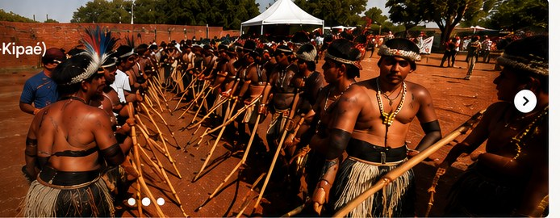
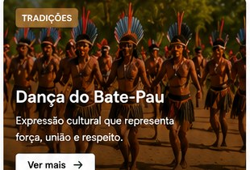
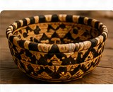

Kó'ene! Seja bem-vindo ao Portal Terena
Nossa história, nossa identidade
Conheça a cultura, as aldeias, os projetos, as notícias e as iniciativas do povo Terena.
Nossas Aldeias
Explore nossas aldeias no mapa e conheça onde estamos.

Destaques
Ver notícias →

